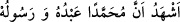

geçmek maksadıyla “Konuş benimle ey Humeyra!”[148] buyururdu.
Muhammed’in O’nun kulu ve Rasûlü olduğuna şâhitlik ederim
ifadesinde ‘kul’ kelimesinin ‘peygamber’ kelimesinden önce getirilmesi de bir şeref
olarak yeter. Ubûdiyyette değer ve şereflendirme mânâsı da vardır. Nitekim Allah
Teâlâ: “Şurası muhakkak ki kullarım üzerinde senin bir hâkimiyetin yoktur.” (el-
Hicr, 15/42) buyurmuştur.
Hâfız şöyle der:
Cânân kapısının köleliğini saltanata satma
Kişi bu kapının gölgesinden güneşe erer
Hz. Ali (r.a.)’ın şöyle dediği rivâyet edilir: “Ya Rab! Sen’in benim Rabbim olman
şeref olarak bana yeter. Yine benim Sen’in kulun olmam bana izzet olarak yeter.”
Allah Teâlâ kulunun Yaratıcısıdır. Kezâ O’ndan başka kulun hevâsını ortadan
kaldırmak suretiyle onu kul yapacak kimse de yoktur. Şu âyetleri görmez misin?: “Şâyet
üzerinizde Allah’ın lütuf ve merhameti olmasaydı, içinizden hiç kimse asla temize
çıkamazdı. Fakat Allah dilediğini arındırır (temizler).” (en-Nur, 24/21) “Hayır,
dilediğini arındıran sadece Allah’tır.” (en-Nisa, 4/49), “Ona ancak tertemiz olanlar
dokunabilir.” (el-Vâkıa, 56/79) Çünkü gerçekte temizleyip arındıran sadece Allah
Teâlâ’dır, O’nun dışındakiler ise birtakım sebep ve vâsıtalardır.
[147]. Buhârî, Savm, 20, 48, 49; Müslim, Sıyam, 57-58; Muvatta, Sıyam, 58;
Müsned, III, 8; VI, 126
[148]. Aclûnî, I, 450